Progress Report for Carrie Kemmet
Week 2:
Date: September 11, 2020Total hours: 8:30
Description of design efforts:
This week, I reviewed the theory behind the components that I am primarily responsible for and developed practical ways to prototype the hardware. In addition to selecting the devices, I researched their applications, limits, programming, and theory. I also ordered development kits so that I could start experimenting with them next week.
The two components that I focused on were the radio transceiver and the coulomb counter. The research was mostly conducted via the Google search engine. Detailed below are the main findings and how they impact the project.
Each Snow-weAR system requires a radio transceiver chip. After investigating various physical layer protocols, LoRa (Long Range) protocol was selected. The advantages of LoRa are that it’s license free, low power, and high range, which is a trade-off for the low data rate [1]. I found several development kits and a wide variety of source code[2] for the selected chip that demonstrates ease of use and a wide range of capabilities.
|
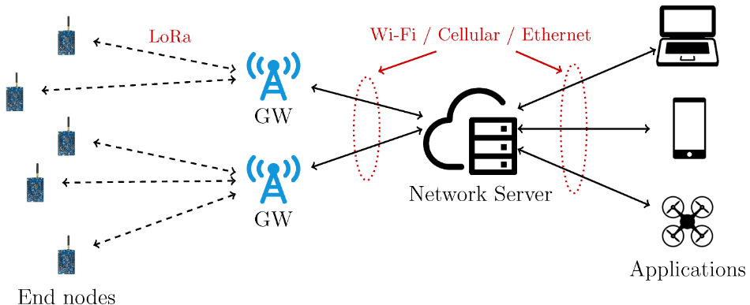 Figure 1: Example of a LoRa Network[7] |
Although this application of LoRa only requires point to point communication, the LoRaWAN communication protocol allows expansion to mesh networking. This LPWAN (low power wide area network) network stack allows bidirectional communication between a gateway and several nodes spread across kilometers and has important applications across industry, from agriculture to smart cities [3]. Future projects could expand on Snow-weAR to increase range, data availability, and processing. |
| In addition to researching LoRa, I also checked out various power monitoring methods, primarily ADC’s and coulomb counters. Because we are using a Lithium Ion battery, a coulomb counter is more appropriate for the application. This is because battery consumption is less strongly correlated with voltage variance and ADC’s therefore provide little accuracy. [4] Coulomb counters function by integrating current flowing through the circuit over time and relaying the SOC (State of Charge), or the ratio between the amount of energy currently stored and the capacity. [5] This coulomb counter will allow the system to accurately report charge and discharge, within 10% as stated within the PSSC, and potentially down to 1% error. |
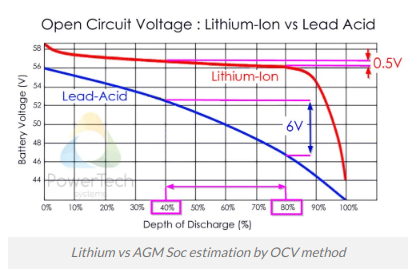 Figure 2: Battery Voltage vs Discharge [8] |
I also bought an Arduino Uno and a set of modules to start experimenting with LoRa. I plan on using the Arduino to conduct experiments due to ease of use and the presence of existing libraries, and on the other end of the transceiver I will use the project microcontroller to ensure successful implementation. A coulomb counter module by SparkFun was also identified and will be ordered for prototyping purposes. [6]
Week 3:
Date: September 18, 2020Total hours: 10:00
Description of design efforts:
| This week, I spent a lot of time on the homework, because it was my turn to do the assignment. Aside from that, I spent a lot of time organizing our schematic now that we have our components selected. I did some research on voltage regulators and discovered that our system needed an LDO regulator due to the small difference between the supply voltage and the highest voltage required by any component. I also researched various batteries and determined the minimum power requirements for a battery to last the amount of time needed for the functional specifications. |
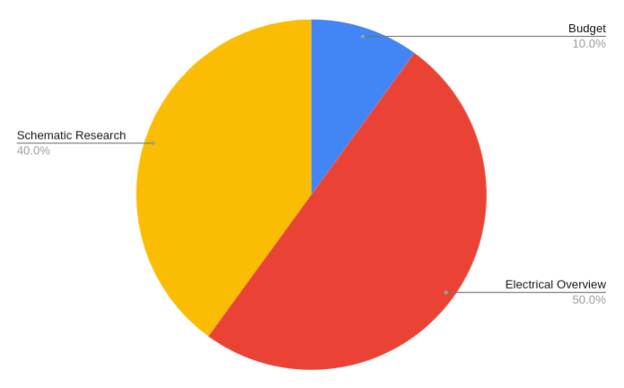 Figure 1: Time allocation for the week |
Pictured is part of the work I did on the schematic. In a file, I saved images of sample schematics for every component. I divided the components into three systems: sensing, power, and radio. I then generalized the diagrams by including output pins from the schematics and their connections. The purpose of this is to see how all of the chips interact with each other, the main processor, and the voltage source. Any wires or small components that are part of detailed circuitry are not included. These diagrams will inform the final design of the schematic and also help confirm that all currents and voltages meet system requirements.

![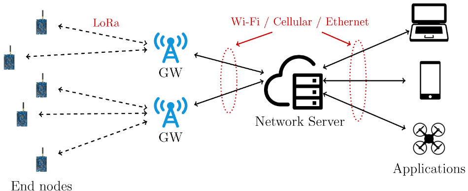Figure 1: Example of a LoRa Network[7]](https://www.mdpi.com/sensors/sensors-20-02028/article_deploy/html/images/sensors-20-02028-g001.png){kind=link}
![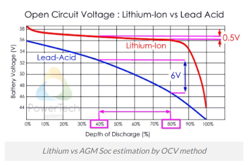Figure 2: Battery Voltage vs Discharge [8]](https://www.powertechsystems.eu/wp-content/uploads/sites/6/2018/11/OCV-vs-SOC-EN.png.webp){kind=link}
{kind=link}
{kind=link}
{kind=link}
Figure 2: My simplified schematic (left), the coulomb counter complete schematic [9] (center), and the regulator schematic [10] (right)
Week 4:
Date: September 25, 2020Total hours: 6:00
Description of design efforts:
| Most of this week was spent interfacing with development kits for the components that we will use for our final implementation. Pictured below is my setup. I also spent time configuring an Arduino Uno and LCD, however, I later realized that this is currently unnecessary, although it may come in handy later. I spent considerable time trying to interface with the transceiver chip, and was unable to establish a serial connection. The CP210x driver on my computer isn't recognizing the chip so I need to reconfigure that. Although I didn't get much working on the hardware side, I learned a lot about the procedure of programming the transciever chip. This includes the steps needed during the setup period, as well as the various modes that it can enter, such as a receeving state. Additionally, familiarized myself with the transmission protocol and with unpacking incoming data. The Github repository that I am using to supplement the datasheet information can be found here. |
{kind=link}
{kind=link}
Figure 1: Radio transciever module (left), and Arduino Uno (right) setups
Week 5:
Date: October 2, 2020Total hours: 12:00
Description of design efforts:
|
This week, the schematic took up the majority of my time. I was in charge of
power circuitry for the schematic including the charging circuit, the battery gauge, the battery, and the voltage regulators, as well as the LoRa transceiver system
and part of the microcontroller. In addition to this, I coordinated the effort among my teammates and delegated the design of the IMU, GPS, and OLED. I then synthesized
all of the information into a single draft. There was a learning curve to using kicad, but most of my time was spent referencing datasheets to check out sample schematics and connections for each system. I also had to use lookup tables to modify the system for our application. For example, the capacitor values on the voltage regulators determine their output voltage and were different for 1.8 volts and 3.3 volts. I also had to make sure all of the appropriate connectors were in place. |
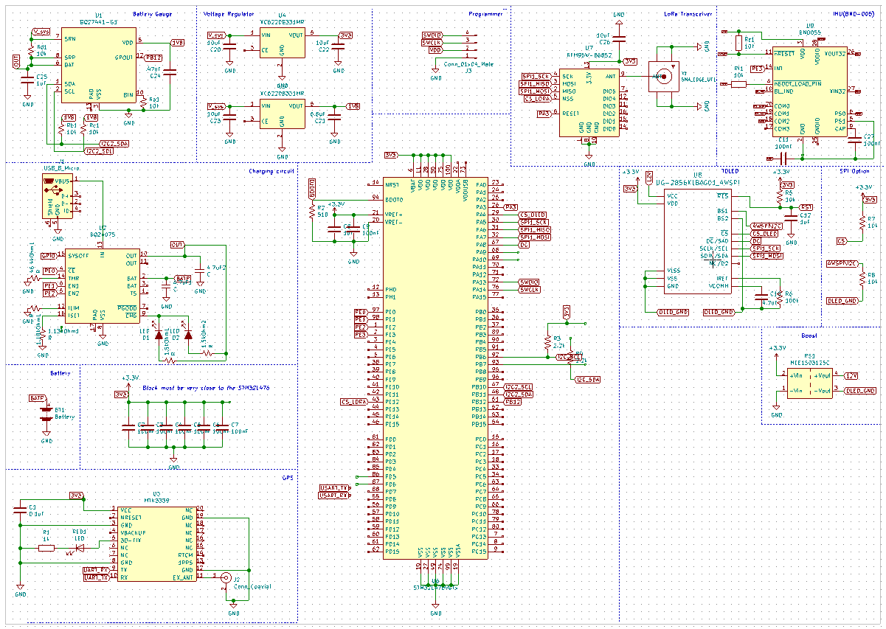 Figure 1: Completed schematic draft |
{kind=link}
{kind=link}
{kind=link}
{kind=link}
{kind=link}
Figure 2: A collection of the individual components that I drafted the schematic for.
On a separate note, I got the LoRa transceiver chip to work. It turns out that I was referencing the wrong port the entire time and my driver was fine. So it goes.
Week 6:
Date: October 2, 2020Total hours: 10:00
Description of design efforts:
The team spent the week getting the first draft of the PCB ready to show course staff during our Thursday meeting. The design review is on Tuesday, so a lot of our efforts are going towards collecting all of our data and information in a central location. The schematic ended up needing a lot of work this week, despite its deceptive appearance of being almost completed the week before. Leadership of the project transferred from me to Mitchell, and he gets major credit for spearheading the effort to polish our schematic and to get it ready for transfer to a PCB. Of course, the finished product was a team effort as always.
| I helped out primarily with collecting footprint libraries and verifying component appropriateness for a lot of the system. I selected a connector for the LoRa and GPS antennas, and did calculations for various values in the schematic, such as series resistors for the LED's. I also did more research into modules for the system, specifically the Battery Babysitter. I added a voltage regulator circuit to further protect the system. In selecting the voltage regulator, I ensured that the power consumption would not lead to overheating using the chip's thermal resistance, and that the output current would be appropriate for our application using the currents listed in the electrical overview assignment. The voltage drop is 400 mV maximum which is the ideal drop considering that the battery output is 3.7V and the circuit requires 3.3V. |
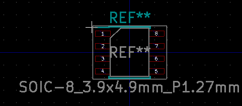 Figure 1: Voltage regulator footprint |
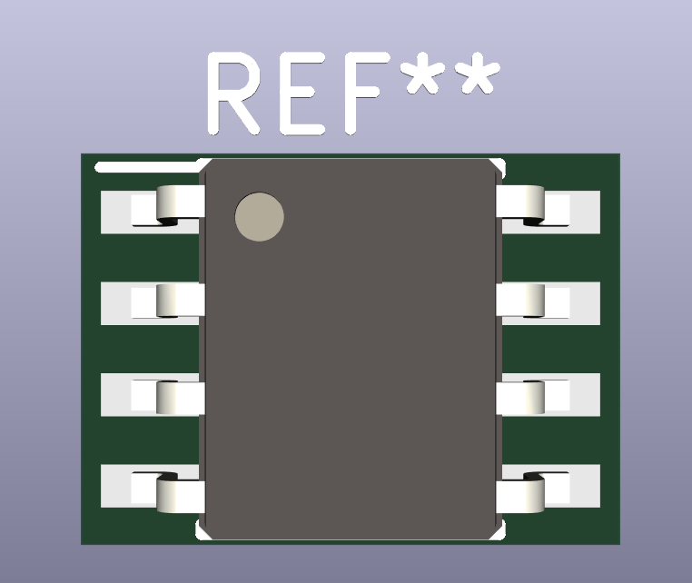 Figure 2: Voltage regulator model |
{kind=link}
{kind=link}
Week 9:
Date: October 23, 2020Total hours: 5:00
Description of design efforts:
|
This week, I spent a few hours working with the battery babysitter, Li-Ion battery, and the STM32l4. This was my first time interfacing with the L4 and so
setting up the environment and verifying proper functionality took some time. It paid off in the long run as development using STMCube was relatively easy,
and the included drivers come in handy as well. The first thing I did was get the battery charging correctly. I selected an input current of 100 mA and was able to successfully start charging the Li-Ion battery. This was verified with the on-board blue LED on the batter babysitter. The datasheet claimed that it indicates successful charge. Next, I configured the I2C and LCD on the STM32L476G Discovery board. The LCD took quite a bit of finnagling and a call to Kennedy, but I eventually got it working well enough to be able to tell that my I2C communication wasn't working at all. It's difficult to debug a signaling issue such as I2C outside of the lab, but I suspect that it's a problem with read/write data and not the firmware. The firmware implementation closely follows the suggestions in STM32 source code. I am using the correct address and also am pretty sure that the requests and registers are accurate as well. I am currently consulting the bq27441-G1 fuel gauge datasheet to diagnose and fix the issue, but as of right now, I am not able to read registers on the battery babysitter yet. |
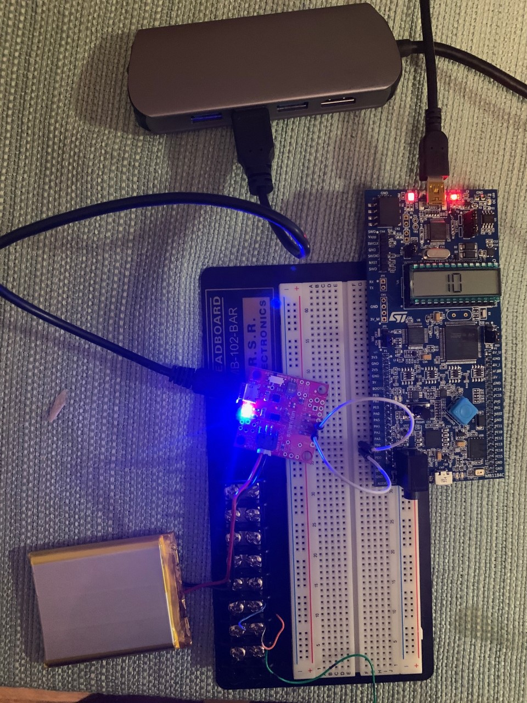 Figure 1: Battery Babysitter, STM32, and Li-Ion battery |
{kind=link}
Week 10:
Date: October 30, 2020Total hours: 15:00
Description of design efforts:
| I split my week between working with interfacing the battery babysitter (BQ27441) and the RFM95W module (SX1276) with the STM32 discovery board. I was unable to achieve success with either. For the battery babysitter, I first verified successful charging and discharging and then I began by reviewing the datasheet for any information relating to I2C protocol with the device. I then configured the STM32 I2C pins. I have been using the internal pullup resistors on the STM32, but next week I'm going to try with extermal 4.7kOhm resistors per the datasheet, and see if that helps. I then spent a lot of time trying to establish communcation with the device by successfully requesting data from the DEVICE_TYPE register. I verified this by using the on-board LCD. I was unable to detect any successful signal. The development with the SX1276 chip went similarly except that I was using SPI, and I was more successful in finding Arduino libraries for the application |
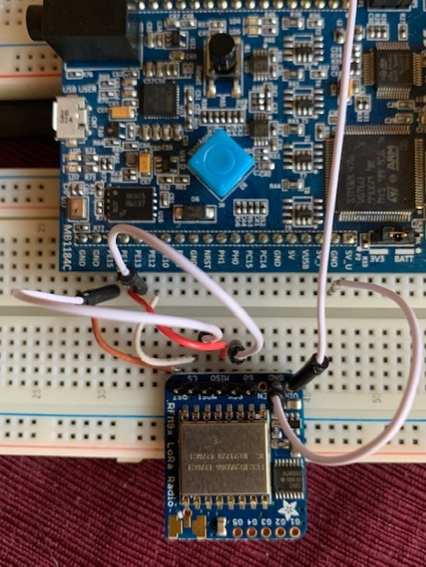 Figure 1: RFM95W with STM32 Discovery Board |
{kind=link}
Miscellanious:
I did a lot of tasks this week that, while pretty small alone, took up enough of my time that they're worth mentioning here. I printed off a 1:1 draft of the PCB and verified that the battery babysitter pins will line up with the headers on the PCB. I also picked up some supplies from the lab and soldered headers onto my RFM95W chip, so hopefully the connections will be more reliable in the future. I don't know if that was the issue or not, but it will be good to have that possibility ruled out.
Week 11:
Date: November 6, 2020Total hours: 10:00
Description of design efforts:
|
This week was dedicated to establishing communication with the LoRa transceiver module (RFM95W) via SPI protocol. Basic communcation was achieved, with the help
of the ADALM2000 digital oscilliscope and Todd's office hours. After a few more hours wrestling with the HAL library, I ended up going back to square one and
directly configuring the registers and parameters for SPI through the STMCubeIDE, using the L4 family reference manual. This was the first time I was able to get
a decent clock signal, and after connecting the (newly soldered) transceiver module, I was able to verify the transmission and reception of bytes from the STM32L476
Discovery Board. Pictured is a read request from register 2 of the SX1276 (the chip on the RFM95W) and the response which was verified with the data sheet. Next week, we'll start soldering the PCB. I plan on developing a robust LoRa library and then integrating it with Peter's GPS and maybe even Kennedy's OLED display (via breadboard, probably not on the PCB yet). |
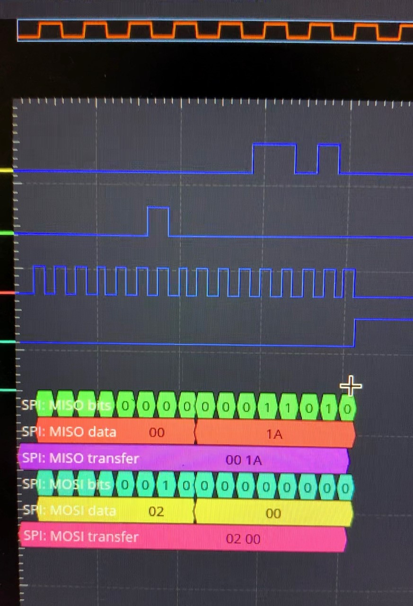 Figure 1: Successful SPI Transmit (1st byte) and Receive (2nd byte) |
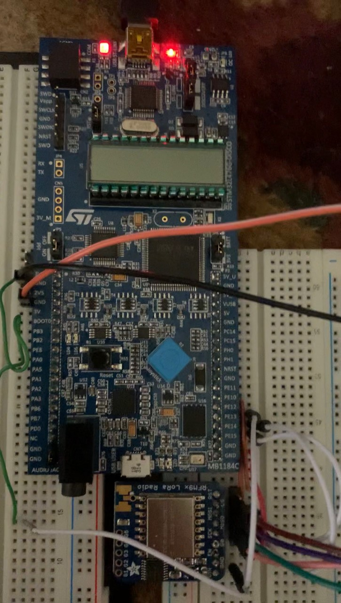 Figure 1: RFM95W with STM32 Discovery Board, Soldered Edition |
{kind=link}
{kind=link}
Week 12:
Date: November 13, 2020Total hours: 8:00
Description of design efforts:
This week, I was in charge of the Environmental and Ethical Analysis as well as continuing development with the LoRa transceiver module. The anaylsis is worth mentioning, even though it doesn't count as part of my 'progress' for this report. I really enjoyed researching the implications our project has for both the planet and the skiing experience. I learned that there really aren't that many in-depth analyses of the impact that the electronics industry as a whole has on the environment. Considering how ubiquitous it is, I'm suprised that technology's contribution to one of the most significant issues for our generation isn't more actively researched.
As far as technical progress, I primarily spent my time with the basic functionality I had achieved last week and expanding that into a useful, abstracted C library for accessing the functionalities of the radio. Unfortunately, we still don't have an antenna for it, so I also researched antenna connectors and sent my findings to Peter, who ordered them on Friday. They are necessary to verify successful data transmission and reception. For now, I was able to map an interrupt called TXDone to one of the DIO pins and verify that the pin was reset when a transmit began and then set again with the transmit buffer was successfully emptied. I was able to check this on the ADALM2000 but was unsuccessful in generating an interrupt to detect this instead. Shown below is a flowchart detailing my implementation for data transmission and the resulting line mapped to TXDone. TXDone will be a useful parameter, but the more important extension of this is the ability to set RXDone on DIO0 to an interrupt for when the LoRa gets data during normal operation.

Figure 1: TX procudure and TXDone IRQ line
Sources Cited:
[1] LoRa-alliance.org. 2020. LoRa Alliance. [online] Available at: <https://lora-alliance.org/sites/default/files/2018-04/what-is-lorawan.pdf> [Accessed 9 September 2020].
[2] mbed.com. 2018. ARM Mbed. [online] Available at: <hhttps://lora-alliance.org/sites/default/files/2018-04/what-is-lorawan.pdf> [Accessed 9 September 2020].
[3] F. Adelantado, X. Vilajosana, P. Tuset-Peiro, B. Martinez, J. Melia-Segui, and T. Watteyne, “Understanding the Limits of LoRaWAN,” IEEE Communications Magazine, vol. 55, no. 9, pp. 34–40, 2017, [Accessed 9 September 2020].
[4] PowerTechSystems.com. 2020. PowerTech. [online] Available at: <https://www.powertechsystems.eu/home/tech-corner/lithium-ion-state-of-charge-soc-measurement/> [Accessed 9 September 2020].
[5] ScienceDirect.com. 2020. ScienceDirect. [online] Available at: <https://www.sciencedirect.com/topics/engineering/coulomb-counting/> [Accessed 9 September 2020].
[6] Learn.SparkFun.com. 2020. sparkfun. [online] Available at: <https://learn.sparkfun.com/tutorials/ltc4150-coulomb-counter-hookup-guide/all> [Accessed 9 September 2020].
[7] Learn.SparkFun.com. 2020. sparkfun. [online] Available at: <https://learn.sparkfun.com/tutorials/ltc4150-coulomb-counter-hookup-guide/all> [Accessed 9 September 2020].
[8] G. Codeluppi, A. Cilfone, L. Davoli, and G. Ferrari, “LoRaFarM: A LoRaWAN-Based Smart Farming Modular IoT Architecture,” Sensors, vol. 20, no. 7, p. 2028, 2020. [Accessed 9 September 2020].
[9] “BQ34110PW ACTIVE,” Texas Instruments. [Online]. Available: https://www.ti.com/store/ti/en/p/product/?p=BQ34110PW. [Accessed: 16-Sep-2020].
[10] Mousern.com. 2020. mouser. [online] Available at:<https://www.mouser.com/datasheet/2/760/XC6220-837466.pdf> [Accessed 15 September 2020].